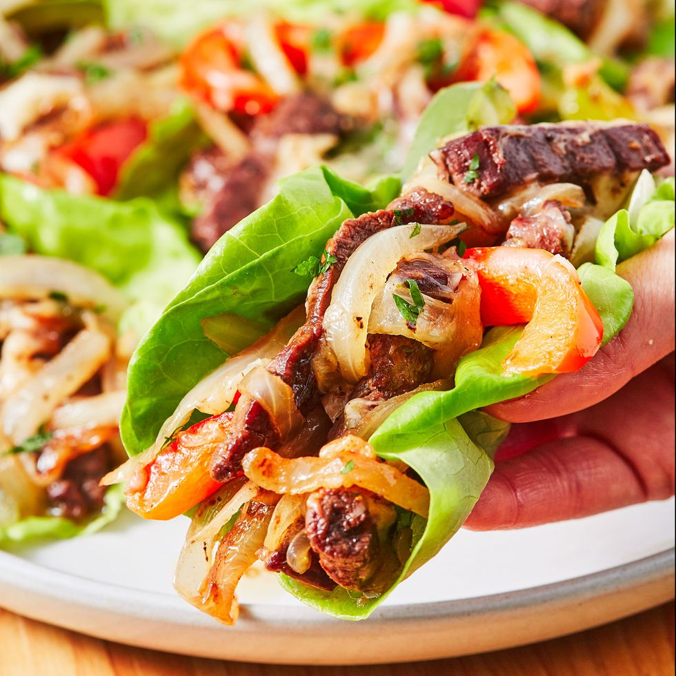

Healthy Lettuce Cheesesteak

Description
You won't miss the hoagie in these low-carb Philly Cheesesteak lettuce wraps. Yes, they're made with provolone—NOT Cheez Whiz. And before you get all riled up, no, they're not in any way authentic. We'll be the first to admit it!
Ingredients
- 2 tbsp. vegetable oil, divided
- 1 large onion, thinly sliced
- 2 large bell peppers, thinly sliced
- 1 tsp. dried oregano
- Kosher salt
- Freshly ground black pepper
- 1 lb. skirt steak, thinly sliced
- 1 c. shredded provolone
- 8 large butterhead lettuce leaves
- 1 tbsp. freshly chopped parsley
Steps
- In a large skillet over medium heat, heat 1 tablespoon oil. Add onion and bell peppers and season with oregano, salt, and pepper. Cook, stirring often, until vegetables are tender, about 10 minutes. Remove peppers and onions from skillet and heat remaining oil in skillet.
- Add steak in a single layer and season with salt and pepper. Cook until steak is seared on one side, about 2 minutes. Flip and cook until the steak is seared on the second side and cooked to your liking, about 2 minutes more for medium.
- Add onion mixture back to skillet and toss to combine. Sprinkle provolone over steak and onions then cover skillet with a tight-fitting lid and cook until the cheese has melted, about 1 minute. Remove from heat.
- Arrange lettuce on a serving platter. Scoop steak mixture onto each piece of lettuce. Garnish with parsley and serve warm.